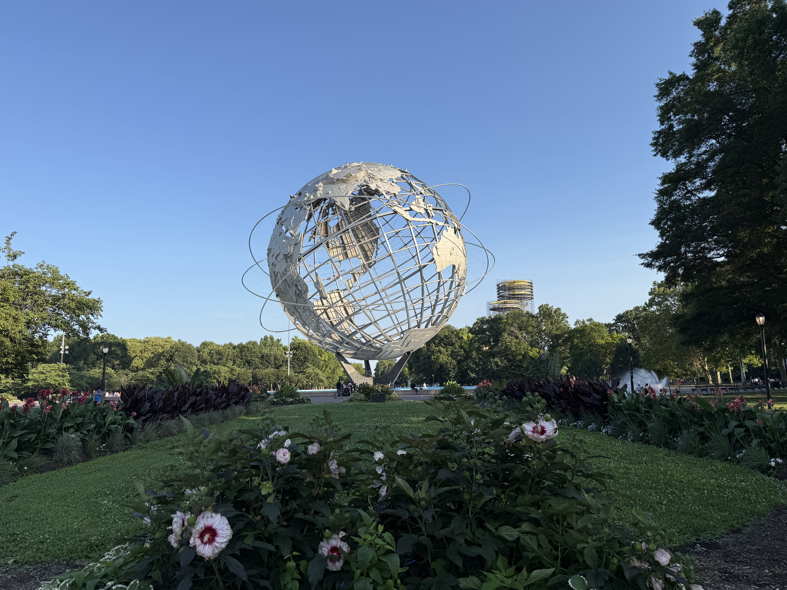

O US Open 2026 teve nesta terça-feira, em 1º de setembro, uma rodada que reuniu quase tudo o que caracteriza as primeiras fases de um Grand Slam: favoritos confirmando presença, uma virada de dois sets abaixo, uma cabeça de chave eliminada, veteranos em destaque e partidas afetadas pela chuva em Nova York.
Na chave masculina, Alexander Zverev sobreviveu a uma batalha de cinco sets contra Lorenzo Sonego, enquanto Taylor Fritz avançou com autoridade e Flavio Cobolli produziu uma das maiores reações do dia. Gael Monfils também transformou a própria estreia em um capítulo especial ao vencer justamente no dia em que completou 40 anos.
Entre as mulheres, Coco Gauff, Elena Rybakina, Madison Keys e Mirra Andreeva passaram pela primeira rodada. O resultado mais significativo entre as cabeças de chave foi a queda de Belinda Bencic diante de Yulia Putintseva.
Para acompanhar a evolução do torneio desde as primeiras rodadas, com os principais placares, eliminações e a formação do chaveamento, desde o primeiro dia.
A sequência ajuda a desenhar os caminhos da competição, que reúne em Flushing Meadows os principais nomes do circuito no último Grand Slam da temporada. Para quem acompanha a história e a importância do torneio no calendário mundial, vale também conhecer a história do US Open.
Zverev escapa de Sonego em cinco sets
Principal cabeça de chave da chave masculina, Alexander Zverev encontrou um dos jogos mais complicados da rodada diante de Lorenzo Sonego.
O alemão venceu por 6/4, 3/6, 6/7, 7/5 e 6/4. Depois de ficar em desvantagem por dois sets a um, Zverev precisou reagir para evitar uma eliminação precoce. A partida começou na programação noturna de 1º de setembro e terminou já na madrugada seguinte em Nova York.
Com o resultado, Zverev garantiu presença na segunda rodada e terá pela frente o francês Quentin Halys, que eliminou Facundo Díaz Acosta na estreia.
Taylor Fritz confirma favoritismo
O norte-americano, cabeça de chave número 9, derrotou o compatriota Darwin Blanch por 6/3, 6/2 e 6/4.
Fritz voltou a Nova York carregando um retrospecto recente importante no torneio: foi finalista em 2024 e chegou às quartas de final na edição seguinte. Contra Blanch, conseguiu resolver a partida em três sets e preservar energia para uma competição que exige sete vitórias para o campeão.
O próximo adversário de Fritz será Mattia Bellucci, que passou por Zsombor Piros por 6/4, 6/2 e 6/0.
Cobolli consegue virada de dois sets abaixo
Flavio Cobolli protagonizou um dos resultados mais dramáticos da rodada.
O italiano perdeu os dois primeiros sets para Francisco Comesaña por 6/3 e 6/2, mas conseguiu mudar completamente a partida. Cobolli venceu as três parciais seguintes por 6/3, 6/4 e 6/4 e fechou a virada em cinco sets.
A recuperação colocou Cobolli na segunda rodada contra Tristan Schoolkate. O australiano avançou ao derrotar Nishesh Basavareddy em quatro sets.
Monfils comemora 40 anos com vitória no US Open
Poucas histórias da rodada tiveram tanta carga simbólica quanto a de Gael Monfils.
O francês entrou em quadra no dia do seu 40º aniversário e derrotou o paraguaio Adolfo Daniel Vallejo por 2/6, 6/1, 6/2 e 6/0. Depois de perder a primeira parcial, Monfils dominou a sequência e assegurou mais uma vitória em Nova York.
O triunfo foi o 34º de Monfils em partidas de simples no US Open, recorde entre tenistas franceses no torneio segundo a organização.
Na segunda rodada, Monfils encontrará o jovem norte-americano Learner Tien.
Coco Gauff começa busca por outro título em Nova York
Campeã do US Open em 2023, Gauff iniciou a edição de 2026 com vitória sobre Zeynep Sonmez por 6/3 e 6/4.
A norte-americana, quarta cabeça de chave, encontrou maior resistência no segundo set, mas conseguiu controlar os momentos de pressão. Ela terminou o confronto com cinco aces e salvou quatro dos cinco break points enfrentados na segunda parcial.
A definição de sua próxima adversária ficou condicionada ao término de Paula Badosa x Daria Kasatkina. A partida foi interrompida pela chuva na noite de 1º de setembro. Na última atualização oficial consultada, Badosa liderava por 6/1 e 5/3.
Rybakina, Keys e Andreeva avançam em sets diretos
Elena Rybakina também passou pela estreia sem perder sets. A cabeça de chave número 2 derrotou a jovem norte-americana Thea Frodin por 6/3 e 6/2.
Na segunda rodada, Rybakina enfrentará Jessica Bouzas Maneiro, que eliminou Darja Vidmanova por 6/3 e 6/4.
Madison Keys superou Alina Korneeva por 7/5 e 6/4. A norte-americana agora terá pela frente Anna Bondar.
Mirra Andreeva foi ainda mais dominante diante de Janice Tjen. A russa venceu por 6/2 e 6/2 e avançou para enfrentar Eva Lys, que passou por Gabriela Knutson também em dois sets.
Putintseva elimina Belinda Bencic
A principal surpresa do dia na chave feminina foi protagonizada por Yulia Putintseva.
A representante do Cazaquistão perdeu o primeiro set para Belinda Bencic, cabeça de chave número 12, mas buscou a virada por 4/6, 7/5 e 6/3.
Putintseva, que já chegou às quartas de final de três torneios de Grand Slam ao longo da carreira, avançou para enfrentar Qinwen Zheng na segunda rodada.
Eala também chama atenção em Nova York
Outro nome que avançou foi Alexandra Eala. A filipina derrotou a norte-americana Mary Stoiana por 6/1 e 6/2 e garantiu lugar na segunda rodada.
Eala terá como próxima adversária Oleksandra Oliynykova, vencedora do duelo contra Reese Brantmeier por 6/4 e 6/4.
Principais resultados de 1º de setembro no US Open 2026
Masculino
- Alexander Zverev 3 x 2 Lorenzo Sonego
- Taylor Fritz 3 x 0 Darwin Blanch
- Flavio Cobolli 3 x 2 Francisco Comesaña
- Gael Monfils 3 x 1 Adolfo Daniel Vallejo
- Lorenzo Musetti 3 x 0 Arthur Fery
- Francisco Cerúndolo 3 x 0 Filip Misolic
Feminino
- Coco Gauff 2 x 0 Zeynep Sonmez
- Elena Rybakina 2 x 0 Thea Frodin
- Madison Keys 2 x 0 Alina Korneeva
- Mirra Andreeva 2 x 0 Janice Tjen
- Yulia Putintseva 2 x 1 Belinda Bencic
- Alexandra Eala 2 x 0 Mary Stoiana
- Maria Sakkari 2 x 1 Robin Montgomery
Próximos grandes confrontos do US Open 2026
A programação de 2 de setembro abre a segunda rodada para parte da chave e coloca novamente vários candidatos ao título em quadra.
Entre os principais duelos confirmados estão:
- Carlos Alcaraz x Jaime Faria
- Ben Shelton x Hubert Hurkacz
- Daniil Medvedev x Sebastian Gorzny
- Stefanos Tsitsipas x Lloyd Harris
- Frances Tiafoe x Rei Sakamoto
- Alexander Bublik x Adrian Mannarino
- Aryna Sabalenka x Polina Iatcenko
- Jessica Pegula x Sofia Kenin
- Jasmine Paolini x Lucrezia Stefanini
- Elina Svitolina x Maya Joint
- Marta Kostyuk x Sloane Stephens
Horários dos principais jogos de hoje e transmissão
A programação oficial desta quarta-feira, 2 de setembro, começa ao meio-dia no horário de Brasília em várias quadras. Como o US Open organiza boa parte da ordem de jogos em sequência, nem todos os confrontos têm um horário exato de início: nesses casos, a entrada em quadra depende da duração das partidas anteriores.
No Brasil, a cobertura completa do US Open 2026 está disponível para assinantes do Disney+ Premium, com transmissão de todas as quadras. A ESPN também transmite o torneio em seus canais, com seleção de partidas ao longo da programação.
Os horários são de Brasília e podem sofrer alterações em razão da duração dos jogos anteriores, condições climáticas ou mudanças determinadas pela organização.
Primeira semana começa a desenhar o US Open
Os resultados de 1º de setembro ainda pertencem ao início da longa caminhada em Nova York, mas já oferecem pistas importantes sobre o torneio. Zverev mostrou capacidade de sobrevivência em um jogo que poderia ter encerrado sua campanha imediatamente. Fritz, Rybakina, Keys, Andreeva e Gauff evitaram partidas excessivamente longas. Cobolli comprovou que uma desvantagem de dois sets ainda pode ser revertida. Monfils acrescentou mais um capítulo à própria relação com o US Open.
Ao mesmo tempo, a eliminação de Bencic reforçou uma das características mais tradicionais das primeiras rodadas dos Grand Slams: a distância no ranking ou na lista de cabeças de chave não elimina o risco de uma surpresa.
Com Alcaraz, Sabalenka, Shelton, Medvedev, Pegula e outros nomes importantes entrando na segunda rodada, o US Open 2026 começa a deixar para trás o período de estreia e entrar em uma fase em que os confrontos ficam progressivamente mais pesados. O caminho até as finais de 12 e 13 de setembro ainda é longo, mas as primeiras peças de um dos principais títulos do tênis mundial já começaram a se encaixar em Nova York.